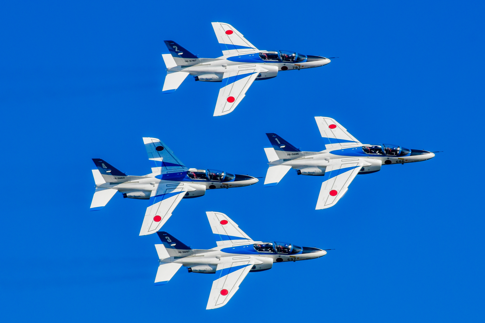
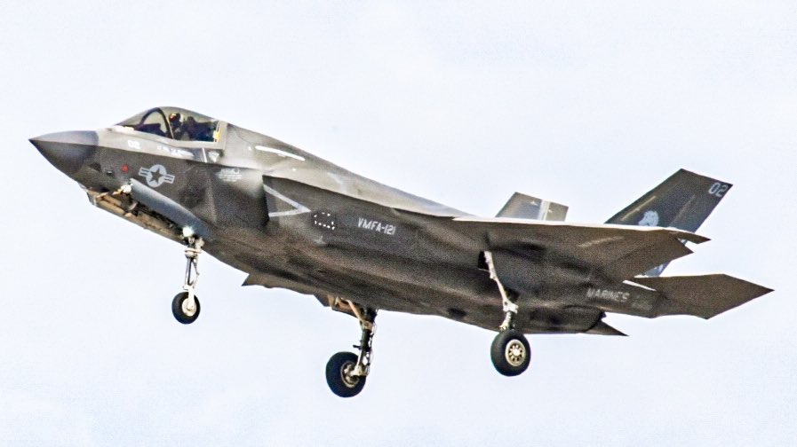

伝説のスポッター。
現在、プロカメラマンを目指して写真撮影を学んでいます。ただ写真を撮影するだけでなく、多くの人が使いやすく、見ていてワクワクするような写真作品に仕上げることを意識しています。
新しいカメラに触れることが大好きで、最近はミラーレスカメラを使ったスピーディーな撮影や、写真加工による無骨な写真の追求にハマっています。
一瞬のシャッターチャンスを切り取る技は本物のカメラマンです。
シャッタースピードを絶妙な感覚で調節し、期待に躍動感を与える撮影を可能に。
超望遠レンズを用いて、大迫力な写真を撮影します。

